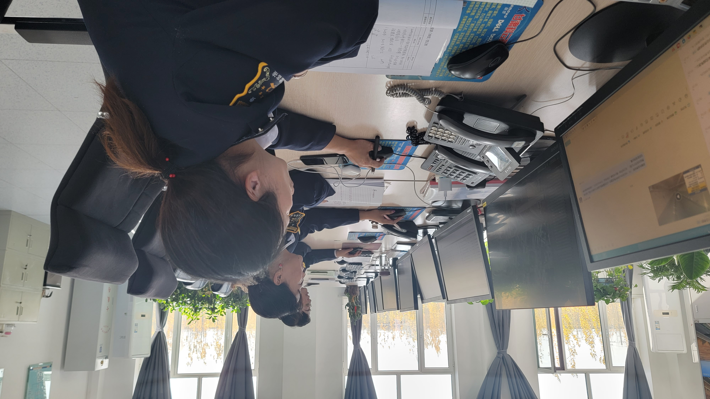
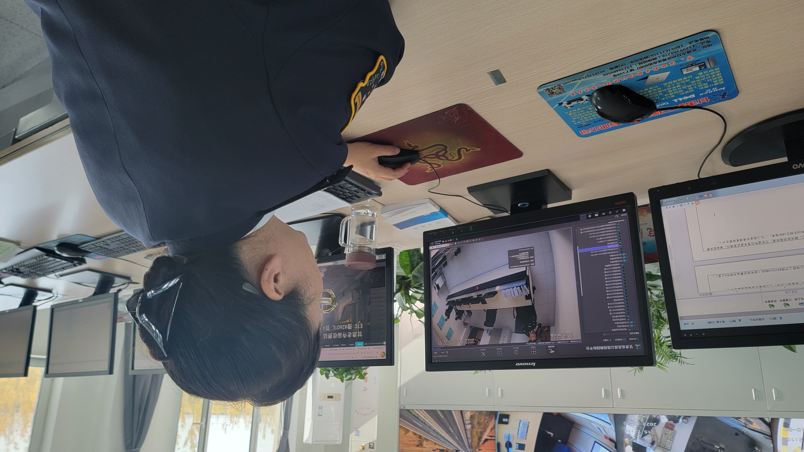
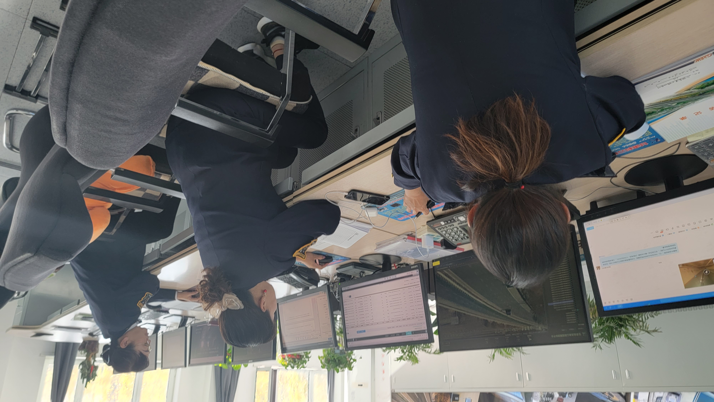
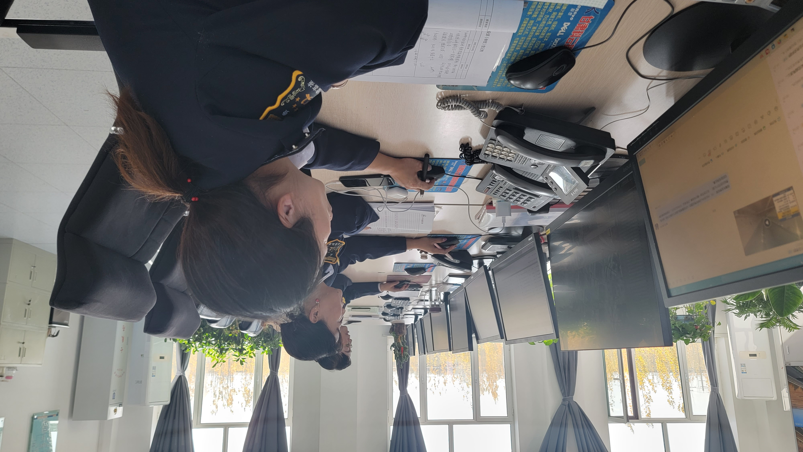
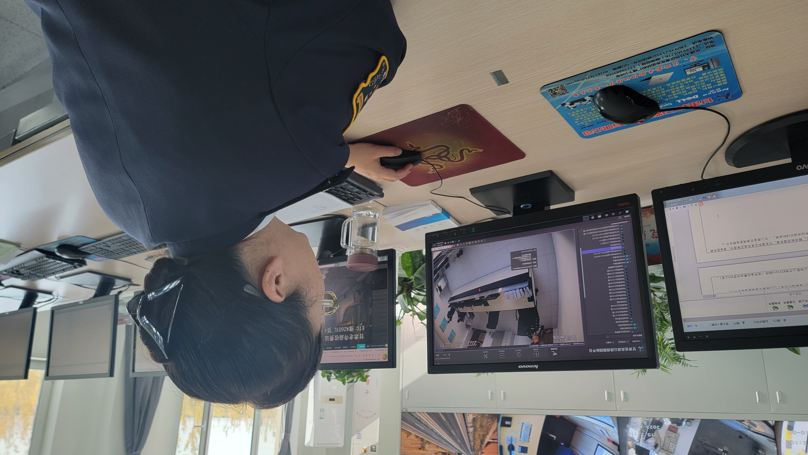
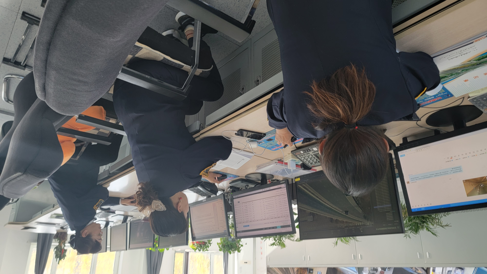

新时代，党的二十大报告为我省交通建设发展明确了更加坚定的方向，G30高速山临所通过激发职工参与“人人治逃”、“整肃纪律，提质增效”专项稽查月等专项工作，充分调动站所两级稽核人员能动性，加大对各类逃费规律的研判和分析，挖掘隐蔽性较强的逃费形式，结合路网治逃典型案例，不断提高各类偷逃费行为的辨识能力，维护好人民群众幸福出行的美好愿景。
建章立制、促效能
《甘肃省联网收费公路通行费稽核管理办法（试行）》、《甘肃省武威高速公路处通行费稽核追缴和补缴奖惩办法》、《山临高速公路收费所稽核管理实施细则（试行）》的相继颁布，为开展稽核业务工作奠定了坚实的基础。全所稽核团队充分利用部、省两级稽核业务平台和路网录像回放系统，精准研判、分析和挖掘每一辆异常车辆信息，集思广益稽核方式、方法。通过“在培训中去总结，在案例中去分析，在特情中找线索，在线索中固定证据，形成数据治逃的显著成效。
专项培训、提效率
加强基层稽核员培训，认真执行《收费公路联网收费运营和服务规程》、《收费公路联网收费运营和服务规则》开展稽核补费工作，通过培训学习进一步提高稽核人员业务水平，优化工作流程，加大对各项数据、稽核业务、追缴工单复核的稽查力度；同时加强内部流程规范管理，不定期开展的专项稽查工作，强化稽核人员部（省）级平台操作过程监管和量化考核力度，每日对路段特情复核和工单创建工作进行稽核数据动态监测分析，规范通行费追缴行为，建立一支高素质、高水平的稽核队伍，保障人民群众便利出行和货主合法通行权益，服务地方社会促进经济的发展。
精准稽核、显成效
通过部、省级大数据平台，依法查处各类偷逃费不良行为，通过事后追缴，更加人性化执法，不断提高稽核工作的能力灵活性和水平。积极思考、主动作为，根据季节性、地域性、周期性车辆通行规律，开展阶段性稽核专项整治活动，重点稽查假冒绿通、有入无出、买短跑长、ETC车型不符等偷逃费行为的综合治理。
基础数据、回头看
持续加大ETC发行专项稽核力度，ETC网点对所辖合作银行发行的ETC基础数据进行“回头看”，查漏补缺，健全完善发行稽核销号台帐，依据稽核业务流程追缴通行费，加大追缴力度。做好ETC车道值守工作，及时关注ETC车辆通行时有无异常情况，并及时进行处置。做好日常数据反查工作，对车道通行流水进行全量反查，对反查出ETC车型、车种不符车辆及时上报所稽查队进行核查，对逃费车辆进行追缴，做到通行费应收尽收。
截止目前，全所共出动所级现场稽查126次，调阅流水数据7251小时;共通报内部文明服务、工作流程等一般性违纪人员616人次，下发收费稽查限期整改通知书126份;查处违规ETC逃费、黑名单车及其他类型逃费车共计380辆，追缴通行费5.19万元。省级稽核平台共推送特情数据22678 条，取消嫌疑20496条，加入重点关注1402条，形成稽核结论780条，创建部级工单83条，协查处理部级工单1430条。寒来暑往，山临所面对种种挑战，攻克重重困难，带领全所职工奋力进取，抓实收费主责主业，持续推进各项收费工作稳步前进。


 





访问量:次 著作权归作者所有,转载或内容合作请联系作者。 ©网内版权号：